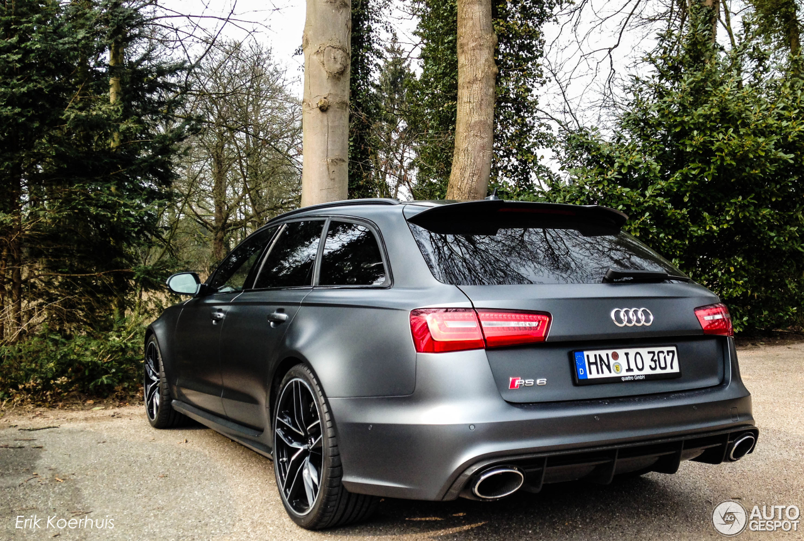

Der Audi RS6 von 2013 war ein beeindruckendes Fahrzeug, das die Kombination von Luxus und Leistung perfekt vereinte. Mit seinem kraftvollen 4,0-Liter-V8-Biturbo-Motor konnte der RS6 eine beeindruckende Leistung von über 550 PS liefern. Dies ermöglichte eine Beschleunigung von 0 auf 100 km/h in weniger als 4 Sekunden. Der RS6 war nicht nur schnell, sondern auch komfortabel und luxuriös ausgestattet. Mit hochwertigen Materialien, modernster Technologie und einem geräumigen Innenraum bot der RS6 ein erstklassiges Fahrerlebnis. Das aggressive Design mit breiten Radhäusern und sportlichen Akzenten verlieh dem RS6 einen dynamischen Look. Der Audi RS6 von 2013 war zweifellos ein Fahrzeug, das sowohl auf der Straße als auch auf der Rennstrecke beeindruckte.

Das Auto mag zwar etwas älter sein, aber ich liebe einfach die alten Motoren, die noch diesen authentischen Sound hatten und einen richtigen Charakter besaßen. Audi hat meiner Meinung nach sowieso die besten Interieurs in dieser Zeit gestaltet, und schon als kleines Kind habe ich davon geträumt, einmal einen RS6 zu besitzen. Der RS6 von 2013 ist für mich ein ganz besonderes Fahrzeug, das meine Fantasie seit jeher beflügelt hat. Seine robuste Bauweise und das unverwechselbare Design machen ihn zu einem zeitlosen Klassiker. Doch es ist nicht nur das äußere Erscheinungsbild, das mich in den Bann zieht. Audi hat es geschafft, im Innenraum erstklassige Materialien, ergonomisches Design und modernste Technologie zu vereinen. Der RS6 von 2013 bietet ein luxuriöses und komfortables Fahrerlebnis, das seinesgleichen sucht. Ich erinnere mich noch genau daran, wie ich als kleiner Junge von diesem Auto geträumt habe, und jetzt ist es ein Symbol für meine automobilen Leidenschaften und Träume geworden. Für mich verkörpert der RS6 von 2013 die perfekte Mischung aus Stil, Leistung und der unvergesslichen Audi-Qualität.